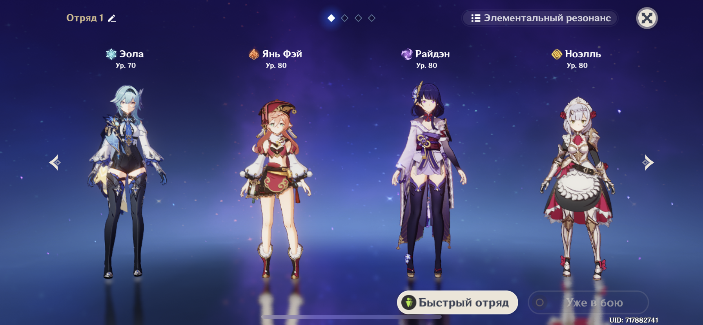

Сюжет
Действие Genshin Impact происходит в фэнтезийном мире Тейват, который является домом для семи различных народов, каждый из которых связан с отдельной стихией и управляется отдельным богом, называемым во вселенной игры «Архонт». История следует за Путешественником, который ходит по бесчисленным мирам со своим братом-близнецом, прежде чем разлучиться в Тейвате. Вместе со своей спутницей-компаньоном Паймон Путешественник отправляется на поиски своего потерянного брата, одновременно участвуя в делах народов Тейвата.
Механики
Одним из основных аспектов Genshin Impact - являются ее механики. В игре они реализованы, так что даже самый казуальный игрок поймет и научиться их использовать.Так, например в игре хорошо реализована механика переключения между персонажами - благодаря их разнообразным способностям, игрок может совмещать их прямо во время схватки с очередным боссом, при этом игра поощрит геймера за взаимодействия разнообразных персонажей.
Помимо механики смены персонажей, в игре довольно интересно выполнена механика боя - как говорилось выше, атаки персонажей можно совмещать, тем самым создавая свои собственные комбо для поражения врага, при этом у врага можно поджечь щит, самого врага заморозить или ударить магией.

Также в Genshin Impact вы можете встретить второстепенные мелкие механики, такие как:
- Готовка пищи
- Планирование
- Взбирание по горам
- Комбинирование стихий и др.